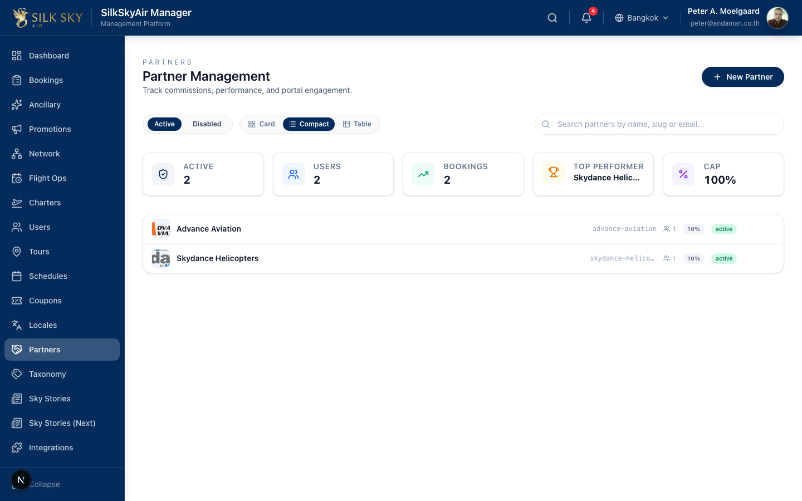
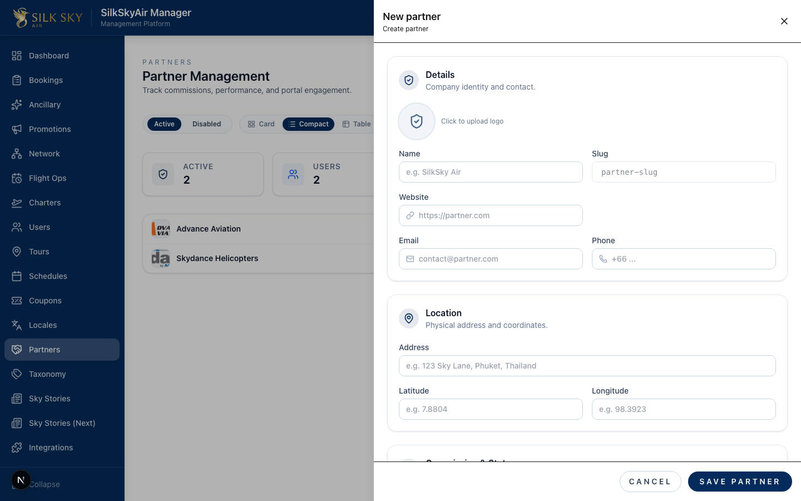
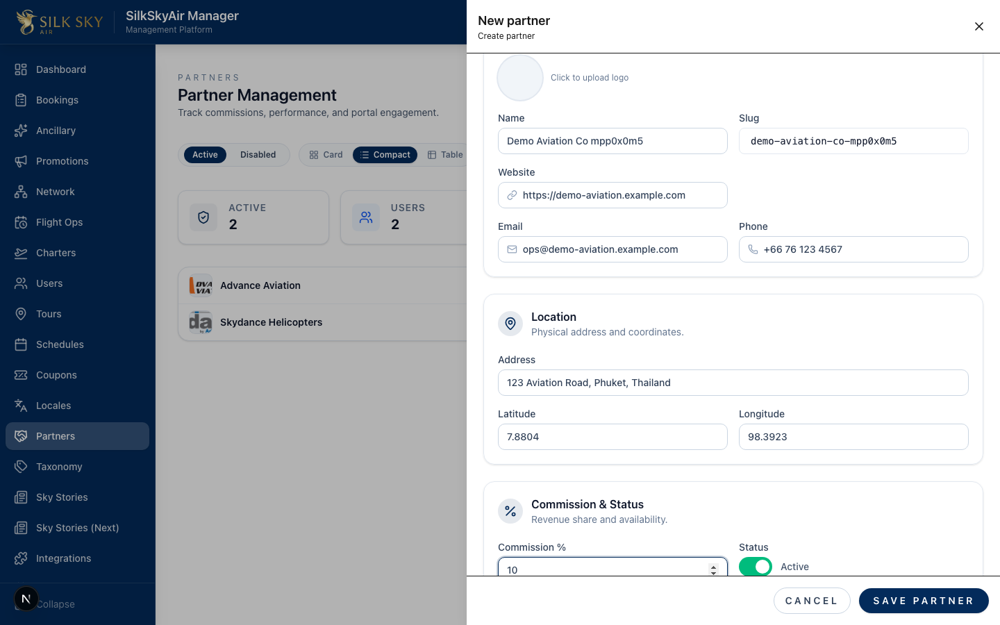
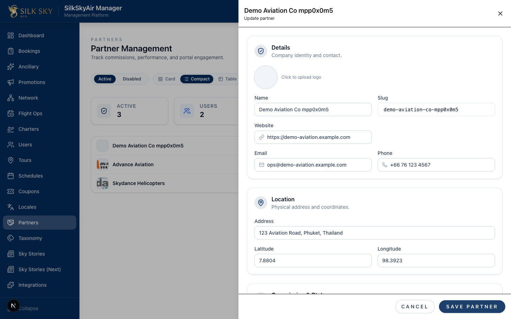
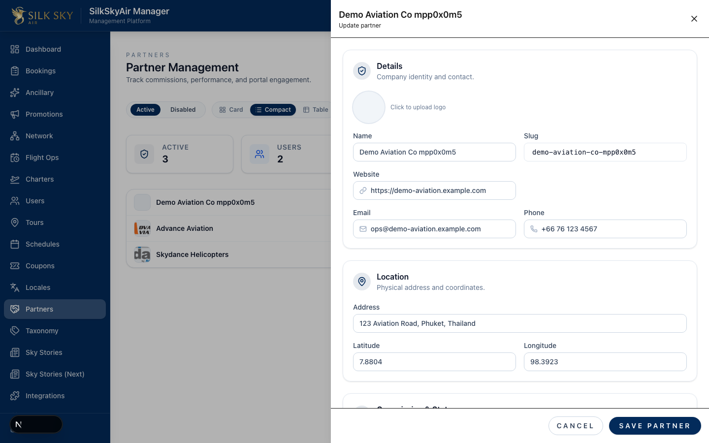

Create a Partner (Back-office)
App: BackOffice (Manager) Who uses it: Ops staff with the
module:partners:accessprivilege. What it does: Walks you through creating a new partner organization end-to-end — opening the create drawer, filling every field, saving, verifying what landed, and re-opening the record later from the partners list.
Before you start
- Local URL:
http://localhost:3000/partners(staging / production: the same path on the relevant Manager host). - Account: Sign in with a Manager account that has the partners module enabled (e.g.
peter@andaman.co.thon local). - Optional: a small image file you'd like to use as the partner's logo. Any common format (PNG, JPG, SVG) works.
Step-by-step
Step 1 — Open the Partners page
Navigate to /partners from the sidebar.

What you should see: the Partner Management page with the existing partners listed, headline counters (Active, Users, Bookings, Top Performer, Cap), and a + New Partner button at the top right.
Step 2 — Open the create drawer
Click + New Partner. The drawer slides in from the right.

What you should see: an empty drawer titled "New partner" with a "Create partner" subtitle, an X close button on the right, and form sections for Details, Location, Commission & Status, and (further down) Countries / Team. The Save Partner CTA sits in a footer pinned to the bottom of the drawer.
Step 3 — Fill the form
Fill in the partner's information:
- Name — required. The Slug auto-fills from the Name as you type.
- Logo — click the round avatar at the top of the Details card to pick a file.
- Website, Email, Phone — contact info.
- Address, Latitude, Longitude — physical location and map coordinates.
- Commission % — share you award to this partner on each booking.

What you should see: every field populated with the values you typed, the Logo avatar showing your uploaded image, and the status badge defaulting to Active.
Step 4 — Save
Click Save Partner in the bottom-right footer.

What you should see: three things at once —
- The drawer stays open (it does NOT auto-close). The header now reads the partner's name with an "Update partner" subtitle — you're now in edit mode.
- Every field you just typed is still showing.
- The URL gains
?partner=<id>(visible in the address bar). Refreshing the page from here will re-open the same record.
The new partner also appears in the list behind the drawer.
If you have unsaved changes and try to close the drawer (X / Escape / clicking the backdrop), you'll get a confirm dialog asking whether to discard. Right after a successful save there are no unsaved changes, so closing is silent.
Step 5 — Come back to the partner later
Close the drawer (X, Escape, or backdrop) — since the form is no longer dirty, it closes cleanly. Then click the partner's row in the list to reopen the record.

What you should see: the drawer reopens in edit mode with every value you saved earlier. The round-trip is honest — close, navigate, reopen, and the record is intact.
Tips & common questions
- The drawer didn't close after I clicked Save. That's intentional (W23 F1.1 R1) — it lets you verify what was saved without re-finding the row. Use the X / Escape / backdrop to close when you're done.
- I clicked X but got an "Unsaved Changes" dialog. You have edits that haven't been saved yet. Click Discard to lose them and close, or Keep Editing to cancel the close.
- I want to send an invitation to the partner's first manager at the same time. Scroll to the bottom of the drawer before saving — there's an "Invite first manager" toggle. Fill the title/name/email and the invitation is sent along with the save.
- The Save button is disabled. Name is required; make sure it's filled. If it still won't save, check the toast / status message below the buttons.
- Where do countries go? Countries can only be added after the partner exists. Save first, then the Countries section unlocks for adding country rows with VAT rates.